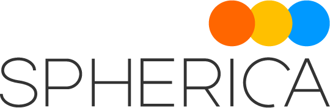

Work Experience
Automation Engineer
Spherica Business Solutions
June 2020 to March 2023
| Worked as Professional service consultant that develops automation solutions for clients. |
| Self-managed projects from requirement gathering to go live |
| Integration projects: Used Workato and Power Automate to integrate 3rd party cloud applications via API. 3rd party applications I have integrated includes Azure, ServiceNow, Slack, Microsoft Teams, Office 365 and many more. |
| Infrastructure projects: Used Terraform, Ansible, Azure DevOps, Azure Pipelines for automating infrastructure builds |
| Scripting projects: Used Python for web scraping, PowerShell for Windows automation scripts and Bash for Linux scripts. |
| Project management tools: I have used JIRA, Azure DevOps and Asana for managing projects |
Sales Engineer Intern
Juniper Networks' EMEA
September 2018 to August 2019
| Collaborating with the Proof of Concept (PoC) and System Engineering teams in Presales Engineering |
| Participating in various projects, including: |
| Auditing POC's storage system |
| Developing interactive lessons that was using Kubernetes for network engineers on automation and DevOps |
| Building PoC and presenting Juniper's solution for Zero Touch Provisioning to a customer |
| Working on the POC Management LAN using Zero Touch Provisioning |
| Automating infrastructure to improve operational efficiency and streamline workflows |